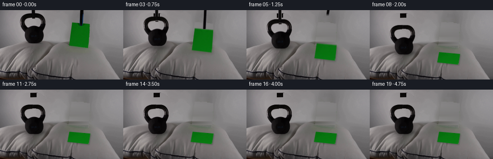
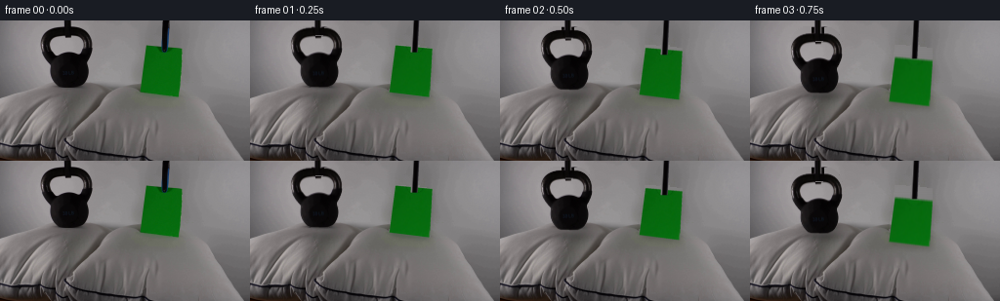
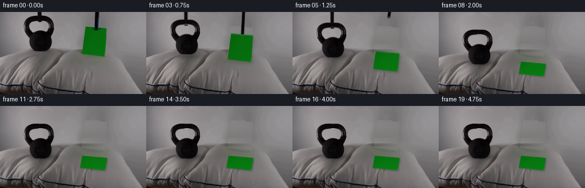
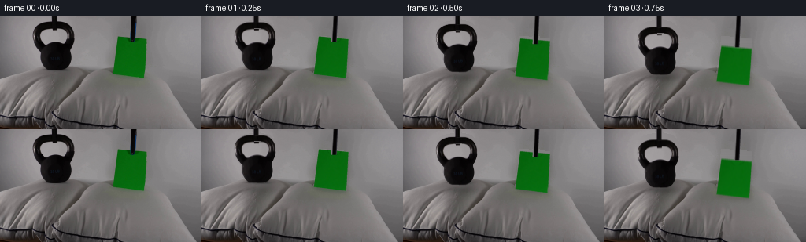

CODING AGENTS AS PIXEL WORLD MODELS
traex/GPT-6.1-Sol · 0195
点击播放 · 原生 RGB 像素
逐轮保存的候选
回放视频、检查图与代码变化。
每份候选均可单独播放。实际图片检查记录在下方工具轨迹中。
候选 01播放与检查图
点击播放 · 原生 RGB 像素


展开代码变化
--- 上一保存版本
+++ 本次保存版本
@@ -0,0 +1,238 @@
+from pathlib import Path
+import numpy as np
+from PIL import Image, ImageDraw
+import cv2
+from scipy.ndimage import gaussian_filter, map_coordinates
+import artifact_io
+
+ROOT=Path(__file__).resolve().parent
+A=np.asarray(Image.open(ROOT/'first_frame.png').convert('RGB'),dtype=np.float32)
+H,W=A.shape[:2]
+Y,X=np.mgrid[:H,:W].astype(np.float32)
+
+def polygon(points):
+ im=Image.new('L',(W*4,H*4))
+ ImageDraw.Draw(im).polygon([(round(x*4),round(y*4)) for x,y in points],fill=255)
+ return np.asarray(im.resize((W,H),Image.Resampling.LANCZOS),dtype=np.float32)/255
+
+def smooth(a,b,t):
+ u=np.clip((t-a)/(b-a),0,1)
+ return u*u*(3-2*u)
+
+# Separate the photographed objects, retaining their surface detail and lighting.
+g=A.mean(2)
+rows=[]
+for y in range(7,64):
+ ids=np.where(g[y,40:96]<125)[0]+40
+ rows.append((float(ids.min())-.45,float(ids.max())+.45))
+rows += [(56.1,86.1),(57.1,85.3),(58.0,83.9),(59.1,81.8),(62.0,79.5)]
+bell_poly=[(lo,y-.25) for y,(lo,hi) in zip(range(7,69),rows)]
+bell_poly += [(hi,y+.3) for y,(lo,hi) in reversed(list(zip(range(7,69),rows)))]
+BM=polygon(bell_poly)
+# Exact grayscale-matted sides of the casting. The open handle remains photographic.
+wall_bell=A.copy()
+for y in range(69):
+ lo=A[y,38:41].mean(0); hi=A[y,96:100].mean(0)
+ for x in range(40,96):
+ u=(x-40)/56
+ wall_bell[y,x]=lo*(1-u)+hi*u
+for y in range(7,64):
+ lo,hi=rows[y-7]
+ for x in range(max(0,int(lo)-1),min(W,int(hi)+2)):
+ if x<lo+1.7 or x>hi-1.7:
+ bg=wall_bell[y,x].mean()
+ ratio=np.clip((bg-g[y,x])/(bg-20),0,1)
+ BM[y,x]*=ratio
+bell_rgb=A.copy()
+# The part of the support visible through the handle is removed on release.
+for y in range(15,19):
+ for x in range(67,75):
+ if bell_rgb[y,x].mean()<100:
+ bell_rgb[y,x]=A[min(y+5,30),x]
+
+paper_quad=np.array([[149.1,25.0],[186.6,28.4],[183.8,78.2],[142.7,73.1]],np.float32)
+PM=polygon(paper_quad)
+# Clean the region revealed as the two suspended objects descend.
+remove=np.maximum(BM,PM)
+remove=np.maximum(remove,polygon([(64.9,-2),(73.5,-2),(74,17),(66,17)]))
+remove=np.maximum(remove,polygon([(165.2,-2),(174.0,-2),(173.3,32),(164.3,32)]))
+mask=(remove>.025).astype(np.uint8)*255
+B=cv2.inpaint(A.astype(np.uint8),mask,5,cv2.INPAINT_TELEA).astype(np.float32)
+# Replace the large revealed wall patch with smoothly interpolated original wall,
+# avoiding the direction-dependent smearing of a wide inpaint.
+for y in range(0,69):
+ for x in range(40,96):
+ if mask[y,x] and y<63:
+ B[y,x]=wall_bell[y,x]
+# Clean edge area around the rod independently with nearby original wall colors.
+for y in range(0,17):
+ for x in range(63,76):
+ if mask[y,x]:
+ u=(x-63)/13
+ B[y,x]=A[y,62]*(1-u)+A[y,76]*u
+for y in range(0,34):
+ for x in range(164,175):
+ if mask[y,x] and y<25:
+ u=(x-164)/11
+ B[y,x]=A[y,161]*(1-u)+A[y,177]*u
+# The paper's hidden background is reconstructed scanline by scanline from its
+# two adjacent visible margins. Retain fine photographic grain from nearby wall.
+for y in range(25,79):
+ l=140 if y>55 else 145
+ r=190
+ left=A[y,l-3:l].mean(0)
+ right=A[y,r:r+3].mean(0)
+ for x in range(l,r):
+ if mask[y,x]:
+ u=(x-l)/(r-l)
+ val=left*(1-u)+right*u
+ grain=(A[y,max(193,min(207,x+49))]-gaussian_filter(A, (1,1,0))[y,max(193,min(207,x+49))])*.5
+ B[y,x]=val+grain
+# Remove the green edge spill and original suspended shadows from the fabric.
+spill=(Y>=74)&(Y<90)&(X>139)&(X<190)
+weights=np.clip((A[:,:,1]-A[:,:,0]-4)/38,0,1)*spill
+neutral=A.copy()
+neutral[:,:,0]=A[:,:,1]-3
+neutral[:,:,2]=A[:,:,1]-5
+B=B*(1-weights[:,:,None])+neutral*weights[:,:,None]
+# Former small shadow beneath the iron is allowed to disappear smoothly.
+old_sh=np.exp(-((X-72)/22)**2-((Y-72)/7)**2)*(1-BM)*(Y>68)
+B+=old_sh[:,:,None]*np.array([6,6,6],np.float32)
+
+# Rectify a photographic paper texture, repairing the narrow support occlusion.
+th,tw=110,84
+v,u=np.mgrid[0:th,0:tw].astype(np.float32)
+u=(u+.5)/tw; v=(v+.5)/th
+src=cv2.getPerspectiveTransform(np.array([[0,0],[1,0],[1,1],[0,1]],np.float32),paper_quad)
+uv=np.stack([np.clip(u,.035,.965),np.clip(v,.03,.96),np.ones_like(u)],-1)
+q=uv@src.T
+px=q[:,:,0]/q[:,:,2]; py=q[:,:,1]/q[:,:,2]
+PT=cv2.remap(A,px.astype(np.float32),py.astype(np.float32),cv2.INTER_LINEAR)
+for iy in range(th):
+ for ix in range(tw):
+ if iy<28 and (PT[iy,ix,1]<88 or PT[iy,ix,2]>PT[iy,ix,1]*.39 or PT[iy,ix,1]-PT[iy,ix,0]<57):
+ PT[iy,ix]=(.5*PT[min(35,th-1),max(6,min(ix,tw-7))]+.5*PT[min(iy+30,th-1),max(6,min(ix,tw-7))])
+
+# Pillow is a deformable textile surface. Only the left pillow experiences a
+# material compression; the sheet of paper does not perceptibly indent the right.
+def pillow_background(compression):
+ d=11.0*compression
+ sy=Y.copy()
+ for _ in range(5):
+ fy=np.exp(-((sy-81)/34)**2)*smooth(48,62,sy)*(1-smooth(124,143,sy))
+ dx=np.exp(-((X-69)/32)**2)
+ sy=Y-d*dx*fy
+ sx=X + compression*1.3*(X-69)/30*np.exp(-((X-69)/38)**2-((Y-91)/34)**2)
+ im=cv2.remap(B,sx.astype(np.float32),sy.astype(np.float32),cv2.INTER_LINEAR,borderMode=cv2.BORDER_REFLECT)
+ # A broad concavity and its contact darkening, not a rigid punch-through.
+ concavity=np.exp(-((X-72)/25)**2-((Y-91)/12)**2)
+ im*=1-(.09*compression*concavity)[:,:,None]
+ # Subtle radial cloth folds around the pressure point.
+ r=np.sqrt(((X-71)/1.35)**2+(Y-92)**2)
+ angle=np.arctan2(Y-92,(X-71)/1.35)
+ fold=1.35*compression*np.sin(8*angle+.25*r)*np.exp(-((r-24)/12)**2)*smooth(80,90,Y)
+ im+=fold[:,:,None]
+ return im
+
+# Rods use sampled RGB cross-sections of the original dark supports.
+def rod(im,which,bottom,shift=0):
+ if bottom<=-1: return im
+ if which=='bell':
+ topx,botx=69.5,69.5+shift; width=7.0
+ section=A[2,65:75].copy()
+ else:
+ topx,botx=170.0,168.0+shift; width=7.0
+ section=A[5,164:175].copy()
+ m=polygon([(topx-width/2,-5),(topx+width/2,-5),(botx+width/2,bottom),(botx-width/2,bottom)])
+ frac=np.clip((Y+5)/max(bottom+5,1),0,1)
+ cx=topx*(1-frac)+botx*frac
+ k=np.clip(((X-cx)/width+.5)*(len(section)-2)+.5,0,len(section)-1)
+ cols=np.stack([np.interp(k,np.arange(len(section)),section[:,c]) for c in range(3)],-1)
+ im=im*(1-m[:,:,None])+cols*m[:,:,None]
+ return im
+
+def paste_bell(im,dy,tilt,release):
+ # Modest stable movement of an extremely heavy iron mass.
+ a=np.deg2rad(tilt); c,s=np.cos(a),np.sin(a)
+ tx=X-71; ty=Y-(68+dy)
+ sx=c*tx+s*ty+71
+ sy=-s*tx+c*ty+68
+ alpha=cv2.remap(BM,sx.astype(np.float32),sy.astype(np.float32),cv2.INTER_LINEAR,borderMode=cv2.BORDER_CONSTANT)
+ pixels=cv2.remap(bell_rgb,sx.astype(np.float32),sy.astype(np.float32),cv2.INTER_LINEAR,borderMode=cv2.BORDER_REFLECT)
+ # At the beginning retain the support fragment visible through the handle.
+ if release<1:
+ orig=cv2.remap(A,sx.astype(np.float32),sy.astype(np.float32),cv2.INTER_LINEAR,borderMode=cv2.BORDER_REFLECT)
+ region=((sy>=15)&(sy<19)&(sx>=67)&(sx<75)).astype(np.float32)*(1-release)
+ pixels=pixels*(1-region[:,:,None])+orig*region[:,:,None]
+ return im*(1-alpha[:,:,None])+pixels*alpha[:,:,None]
+
+def paste_paper(im,quad,flat):
+ target=np.asarray(quad,np.float32)
+ tr=cv2.getPerspectiveTransform(target,np.array([[0,0],[tw-1,0],[tw-1,th-1],[0,th-1]],np.float32))
+ pp=np.stack([X,Y,np.ones_like(X)],-1)@tr.T
+ uu=(pp[:,:,0]/pp[:,:,2]).astype(np.float32)
+ vv=(pp[:,:,1]/pp[:,:,2]).astype(np.float32)
+ tex=cv2.remap(PT,uu,vv,cv2.INTER_LINEAR,borderMode=cv2.BORDER_REPLICATE)
+ # Changes in irradiance as the sheet turns from vertical to horizontal.
+ tex*=1+.13*flat
+ bend=(1-flat)*flat*1.5*np.sin(np.clip(vv/th,0,1)*np.pi)
+ tex[:,:,1]+=bend
+ alpha=polygon(target)
+ return im*(1-alpha[:,:,None])+tex*alpha[:,:,None]
+
+def render(t):
+ lower=smooth(.12,1.32,t)
+ settle=smooth(1.24,1.80,t)
+ tau=max(0,t-1.55)
+ wobble=.72*np.exp(-tau*3.7)*np.sin(11*tau) if t>1.55 else 0
+ dy=11.7*lower+12.3*settle+wobble
+ compression=settle+(.02*np.exp(-tau*4)*np.sin(11*tau) if t>1.55 else 0)
+ im=pillow_background(compression)
+ # Gradually sharpen the shadow as both objects reach the cloth.
+ shadow_strength=.10+.24*lower+.15*settle
+ shadow=np.exp(-((X-73)/20)**2-((Y-(77+11*settle))/5.0)**2)
+ im*=1-(shadow_strength*shadow)[:,:,None]
+ release=smooth(1.55,2.10,t)
+ if t<1.55:
+ rb=7.4+dy
+ else: rb=(7.4+dy)-smooth(1.55,2.25,t)*47
+ im=rod(im,'bell',rb)
+ im=paste_bell(im,dy,.35*wobble,release)
+ # Placement begins at the same instant on both sides. The lightweight sheet
+ # turns toward the horizontal and settles without depressing its pillow.
+ flat=smooth(.48,1.78,t)
+ placement=smooth(.12,1.30,t)
+ q=paper_quad.copy()
+ q[:,1]+=12.0*placement
+ final=np.array([[144.0,87.2],[187.4,91.0],[184.1,113.0],[140.0,108.2]],np.float32)
+ q=q*(1-flat)+final*flat
+ flutter=np.exp(-max(0,t-1.6)*5)*np.sin(max(0,t-1.6)*13)*.9 if t>1.6 else 0
+ q[:2,1]+=flutter
+ # Paper casts a shallow, close shadow in its final resting orientation.
+ shquad=q.copy(); shquad[:,0]+=1.3; shquad[:,1]+=1.8+2*(1-flat)
+ pm=polygon(shquad)
+ sh=gaussian_filter(pm,1.25+1.5*(1-flat))
+ im*=1-(sh*(.12+.10*flat))[:,:,None]
+ im=paste_paper(im,q,flat)
+ # The paper support disengages as the sheet is laid down, then leaves frame.
+ if t<.87:
+ pb=32+12*placement+3*flat
+ else:
+ pb=37.0-52*smooth(.87,1.60,t)
+ im=rod(im,'paper',pb, -.3*placement)
+ return np.clip(im,0,255)
+
+frames=[A.astype(np.uint8)]
+for n in range(1,20):
+ t=n/4
+ # A short real-time exposure keeps the lowering crisp without strobing.
+ samples=[render(t+dt) for dt in [-.018,0,.018]]
+ frames.append(np.round(np.mean(samples,axis=0)).astype(np.uint8))
+frames=np.stack(frames)
+assert np.array_equal(frames[0],np.asarray(Image.open(ROOT/'first_frame.png').convert('RGB')))
+(ROOT/'.tmp').mkdir(exist_ok=True)
+Image.fromarray(np.clip(B,0,255).astype(np.uint8)).save(ROOT/'.tmp/background.png')
+Image.fromarray((BM*255).astype(np.uint8)).save(ROOT/'.tmp/bell_alpha.png')
+Image.fromarray(np.clip(PT,0,255).astype(np.uint8)).save(ROOT/'.tmp/paper_texture.png')
+np.save(ROOT/'.tmp/candidate_rgb.npy',frames)
+artifact_io.save(frames,ROOT)
候选 02播放与检查图
点击播放 · 原生 RGB 像素


展开代码变化
--- 上一保存版本
+++ 本次保存版本
@@ -56,7 +56,10 @@
remove=np.maximum(BM,PM)
remove=np.maximum(remove,polygon([(64.9,-2),(73.5,-2),(74,17),(66,17)]))
remove=np.maximum(remove,polygon([(165.2,-2),(174.0,-2),(173.3,32),(164.3,32)]))
-mask=(remove>.025).astype(np.uint8)*255
+# Include all antialiased pieces of the old support and casting crown.
+extra=((X>=41)&(X<=95)&(Y<63)&(g<130)).astype(np.uint8)
+extra=cv2.dilate(extra,np.ones((3,3),np.uint8))
+mask=((remove>.025)|(extra>0)).astype(np.uint8)*255
B=cv2.inpaint(A.astype(np.uint8),mask,5,cv2.INPAINT_TELEA).astype(np.float32)
# Replace the large revealed wall patch with smoothly interpolated original wall,
# avoiding the direction-dependent smearing of a wide inpaint.
@@ -69,7 +72,7 @@
for x in range(63,76):
if mask[y,x]:
u=(x-63)/13
- B[y,x]=A[y,62]*(1-u)+A[y,76]*u
+ B[y,x]=wall_bell[y,x]
for y in range(0,34):
for x in range(164,175):
if mask[y,x] and y<25:
@@ -77,6 +80,7 @@
B[y,x]=A[y,161]*(1-u)+A[y,177]*u
# The paper's hidden background is reconstructed scanline by scanline from its
# two adjacent visible margins. Retain fine photographic grain from nearby wall.
+grain_source=A-gaussian_filter(A,(1,1,0))
for y in range(25,79):
l=140 if y>55 else 145
r=190
@@ -86,11 +90,11 @@
if mask[y,x]:
u=(x-l)/(r-l)
val=left*(1-u)+right*u
- grain=(A[y,max(193,min(207,x+49))]-gaussian_filter(A, (1,1,0))[y,max(193,min(207,x+49))])*.5
+ grain=grain_source[y,max(193,min(207,x+49))]*.5
B[y,x]=val+grain
# Remove the green edge spill and original suspended shadows from the fabric.
spill=(Y>=74)&(Y<90)&(X>139)&(X<190)
-weights=np.clip((A[:,:,1]-A[:,:,0]-4)/38,0,1)*spill
+weights=np.clip((A[:,:,1]-A[:,:,0]-4)/38,0,1)*spill*(PM<.04)*(mask==0)
neutral=A.copy()
neutral[:,:,0]=A[:,:,1]-3
neutral[:,:,2]=A[:,:,1]-5
可观测工具轨迹
实际执行的命令与返回图片。
命令 1exit 0
/bin/bash -lc "ls -la && cat prompt.txt && printf '\\n---RULES---\\n' && cat GENERATION_RULES.md"
命令 2exit 0
/bin/bash -lc "cat artifact_io.py && python - <<'PY'
from PIL import Image
import numpy as np
im=np.array(Image.open('first_frame.png').convert('RGB'))
print('shape', im.shape)
# low resolution image as luminance symbols
im=Image.fromarray(im).resize((128,72))
a=np.array(im); g=a.mean(2)
cs=' .,:;irsXA253hMHGS#9B&@'
for row in g:
print(''.join(cs[min(len(cs)-1,int(v/256*len(cs)))] for v in row))
print('tiles mean RGB (16x8)')
a=np.array(Image.open('first_frame.png').convert('RGB'))
for y in range(0,144,8):
print(y,[(x, tuple(np.round(a[y:y+8,x:x+16].mean((0,1))).astype(int))) for x in range(0,256,16)])
PY"命令 3exit 0
/bin/bash -lc "python - <<'PY'
from PIL import Image
import numpy as np
from scipy import ndimage
A=np.array(Image.open('first_frame.png')).astype(float)
g=A.mean(2)
# categorical colors with dark and green
for y in range(0,144,2):
s=''
for x in range(0,256,2):
r,gg,b=A[y:y+2,x:x+2].mean((0,1)); v=(r+gg+b)/3
if gg-r>25 and gg-b>25: c='G'
elif v<15:c='@'
elif v<35:c='#'
elif v<60:c='o'
elif v<90:c=':'
elif v<120:c='.'
elif v<140:c=' '
elif v<155:c='-'
elif v<175:c='+'
else:c='*'
s+=c
print(f'{y:3} '+s)
print('dark object bounds per row')
for y in range(0,80):
d=np.where(g[y,30:100]<65)[0]+30
e=np.where((A[y,:,1]-A[y,:,0]>25)&(A[y,:,1]-A[y,:,2]>25))[0]
if y%2==0: print(y,(d.min(),d.max()) if len(d) else None,(e.min(),e.max()) if len(e) else None)
print('Column 161:')
for y in range(0,85,2):print(y,[tuple(a.astype(int)) for a in A[y,155:168]])
PY"命令 4exit 0
/bin/bash -lc "python - <<'PY'
from PIL import Image
import numpy as np
from scipy.ndimage import gaussian_filter,sobel
A=np.array(Image.open('first_frame.png')).astype(float); G=A.mean(2)
E=np.hypot(sobel(gaussian_filter(G,.6),0),sobel(gaussian_filter(G,.6),1))
for y in range(61,144):
s=''
for x in range(0,256,2):
v=E[y,x:x+2].mean()
s+=' ' if v<10 else ('.' if v<25 else (':' if v<50 else ('o' if v<90 else ('O' if v<160 else '#'))))
print(f'{y:3} '+s)
print('\\nDetail handle upper scene')
cs='@%#*+=-:. '
for y in range(0,72):
print(f'{y:2d} '+''.join(cs[min(9,int(v/18))] for v in G[y,35:100]))
PY"命令 5exit 0
/bin/bash -lc "python - <<'PY'
from PIL import Image
import numpy as np
from scipy.ndimage import gaussian_filter,sobel
from scipy.signal import find_peaks
A=np.array(Image.open('first_frame.png')).astype(float); G=gaussian_filter(A.mean(2),1)
for y in range(64,144,4):
d=np.hypot(sobel(G,0),sobel(G,1))[y]
peaks,p=find_peaks(d,height=55,distance=4)
print(y,list(zip(peaks.tolist(),np.round(p['peak_heights']).astype(int).tolist())))
print('\\n left pillow grayscale values x=0..120 step3 y=70..138 step2')
cs='@%#*+=-:. '
for y in range(70,142,2):
print(f'{y:3d} '+''.join(cs[min(9,int(v/18))] for v in A.mean(2)[y,:140:2]))
PY"命令 6exit 0
/bin/bash -lc "python - <<'PY'
from PIL import Image
import numpy as np
A=np.array(Image.open('first_frame.png')); G=A.mean(2)
for y in range(59,73):
print(y,' '.join('%3d'%v for v in G[y,50:92].astype(int)))
print('paper green threshold per row')
for y in range(24,81):
x=np.arange(137,193); row=A[y,x].astype(float)
ids=x[(row[:,1]-row[:,0]>13)&(row[:,1]-row[:,2]>13)]
print(y,ids.min() if len(ids) else None,ids.max() if len(ids) else None)
print('Right pillar dark bounds')
for y in range(0,35):
x=np.arange(158,181); ids=x[G[y,x]<65]
print(y,ids.tolist())
PY"命令 7exit 0
/bin/bash -lc "python - <<'PY'
import cv2, scipy
print('cv2',cv2.__version__)
PY"命令 8exit 0
/bin/bash -lc "python - <<'PY'
from PIL import Image
import numpy as np
A=np.array(Image.open('first_frame.png')); g=A.mean(2)
print('right pillow upper edge')
for x in [95,105,115,125,130,135,140,190,195,200,205]:
print(x,[(y,round(g[y,x])) for y in range(60,91,2)])
print('wall at sides of bell')
for y in range(0,74,4): print(y,[(x,round(g[y,x])) for x in [35,39,40,41,94,95,97,99,100]])
PY"命令 9exit 0
/bin/bash -lc 'ls .agents && find . -maxdepth 2 -type f | head'
命令 10exit 0
/bin/bash -lc "python - <<'PY'
import numpy as np
from PIL import Image
from scipy.ndimage import label
A=np.array(Image.open('first_frame.png'));g=A.mean(2)
mask=(g<85)&(np.indices(g.shape)[1]>40)&(np.indices(g.shape)[1]<96)&(np.indices(g.shape)[0]>=7)&(np.indices(g.shape)[0]<=68)
L,n=label(mask);counts=np.bincount(L.ravel());counts[0]=0;m=L==counts.argmax()
for y in range(7,69):
ids=np.where(m[y])[0]
if y%2==1:print(y,ids.min() if len(ids) else None,ids.max() if len(ids) else None,len(ids))
print('area',m.sum())
PY"命令 11exit 0
/bin/bash -lc "cat > generate.py <<'PY'
from pathlib import Path
import numpy as np
from PIL import Image, ImageDraw
import cv2
from scipy.ndimage import gaussian_filter, map_coordinates
import artifact_io
ROOT=Path(__file__).resolve().parent
A=np.asarray(Image.open(ROOT/'first_frame.png').convert('RGB'),dtype=np.float32)
H,W=A.shape[:2]
Y,X=np.mgrid[:H,:W].astype(np.float32)
def polygon(points):
im=Image.new('L',(W*4,H*4))
ImageDraw.Draw(im).polygon([(round(x*4),round(y*4)) for x,y in points],fill=255)
return np.asarray(im.resize((W,H),Image.Resampling.LANCZOS),dtype=np.float32)/255
def smooth(a,b,t):
u=np.clip((t-a)/(b-a),0,1)
return u*u*(3-2*u)
# Separate the photographed objects, retaining their surface detail and lighting.
g=A.mean(2)
rows=[]
for y in range(7,64):
ids=np.where(g[y,40:96]<125)[0]+40
rows.append((float(ids.min())-.45,float(ids.max())+.45))
rows += [(56.1,86.1),(57.1,85.3),(58.0,83.9),(59.1,81.8),(62.0,79.5)]
bell_poly=[(lo,y-.25) for y,(lo,hi) in zip(range(7,69),rows)]
bell_poly += [(hi,y+.3) for y,(lo,hi) in reversed(list(zip(range(7,69),rows)))]
BM=polygon(bell_poly)
# Exact grayscale-matted sides of the casting. The open handle remains photographic.
wall_bell=A.copy()
for y in range(69):
lo=A[y,38:41].mean(0); hi=A[y,96:100].mean(0)
for x in range(40,96):
u=(x-40)/56
wall_bell[y,x]=lo*(1-u)+hi*u
for y in range(7,64):
lo,hi=rows[y-7]
for x in range(max(0,int(lo)-1),min(W,int(hi)+2)):
if x<lo+1.7 or x>hi-1.7:
bg=wall_bell[y,x].mean()
ratio=np.clip((bg-g[y,x])/(bg-20),0,1)
BM[y,x]*=ratio
bell_rgb=A.copy()
# The part of the support visible through the handle is removed on release.
for y in range(15,19):
for x in range(67,75):
if bell_rgb[y,x].mean()<100:
bell_rgb[y,x]=A[min(y+5,30),x]
paper_quad=np.array([[149.1,25.0],[186.6,28.4],[183.8,78.2],[142.7,73.1]],np.float32)
PM=polygon(paper_quad)
# Clean the region revealed as the two suspended objects descend.
remove=np.maximum(BM,PM)
remove=np.maximum(remove,polygon([(64.9,-2),(73.5,-2),(74,17),(66,17)]))
remove=np.maximum(remove,polygon([(165.2,-2),(174.0,-2),(173.3,32),(164.3,32)]))
mask=(remove>.025).astype(np.uint8)*255
B=cv2.inpaint(A.astype(np.uint8),mask,5,cv2.INPAINT_TELEA).astype(np.float32)
# Replace the large revealed wall patch with smoothly interpolated original wall,
# avoiding the direction-dependent smearing of a wide inpaint.
for y in range(0,69):
for x in range(40,96):
if mask[y,x] and y<63:
B[y,x]=wall_bell[y,x]
# Clean edge area around the rod independently with nearby original wall colors.
for y in range(0,17):
for x in range(63,76):
if mask[y,x]:
u=(x-63)/13
B[y,x]=A[y,62]*(1-u)+A[y,76]*u
for y in range(0,34):
for x in range(164,175):
if mask[y,x] and y<25:
u=(x-164)/11
B[y,x]=A[y,161]*(1-u)+A[y,177]*u
# The paper's hidden background is reconstructed scanline by scanline from its
# two adjacent visible margins. Retain fine photographic grain from nearby wall.
for y in range(25,79):
l=140 if y>55 else 145
r=190
left=A[y,l-3:l].mean(0)
right=A[y,r:r+3].mean(0)
for x in range(l,r):
if mask[y,x]:
u=(x-l)/(r-l)
val=left*(1-u)+right*u
grain=(A[y,max(193,min(207,x+49))]-gaussian_filter(A, (1,1,0))[y,max(193,min(207,x+49))])*.5
B[y,x]=val+grain
# Remove the green edge spill and original suspended shadows from the fabric.
spill=(Y>=74)&(Y<90)&(X>139)&(X<190)
weights=np.clip((A[:,:,1]-A[:,:,0]-4)/38,0,1)*spill
neutral=A.copy()
neutral[:,:,0]=A[:,:,1]-3
neutral[:,:,2]=A[:,:,1]-5
B=B*(1-weights[:,:,None])+neutral*weights[:,:,None]
# Former small shadow beneath the iron is allowed to disappear smoothly.
old_sh=np.exp(-((X-72)/22)**2-((Y-72)/7)**2)*(1-BM)*(Y>68)
B+=old_sh[:,:,None]*np.array([6,6,6],np.float32)
# Rectify a photographic paper texture, repairing the narrow support occlusion.
th,tw=110,84
v,u=np.mgrid[0:th,0:tw].astype(np.float32)
u=(u+.5)/tw; v=(v+.5)/th
src=cv2.getPerspectiveTransform(np.array([[0,0],[1,0],[1,1],[0,1]],np.float32),paper_quad)
uv=np.stack([np.clip(u,.035,.965),np.clip(v,.03,.96),np.ones_like(u)],-1)
q=uv@src.T
px=q[:,:,0]/q[:,:,2]; py=q[:,:,1]/q[:,:,2]
PT=cv2.remap(A,px.astype(np.float32),py.astype(np.float32),cv2.INTER_LINEAR)
for iy in range(th):
for ix in range(tw):
if iy<28 and (PT[iy,ix,1]<88 or PT[iy,ix,2]>PT[iy,ix,1]*.39 or PT[iy,ix,1]-PT[iy,ix,0]<57):
PT[iy,ix]=(.5*PT[min(35,th-1),max(6,min(ix,tw-7))]+.5*PT[min(iy+30,th-1),max(6,min(ix,tw-7))])
# Pillow is a deformable textile surface. Only the left pillow experiences a
# material compression; the sheet of paper does not perceptibly indent the right.
def pillow_background(compression):
d=11.0*compression
sy=Y.copy()
for _ in range(5):
fy=np.exp(-((sy-81)/34)**2)*smooth(48,62,sy)*(1-smooth(124,143,sy))
dx=np.exp(-((X-69)/32)**2)
sy=Y-d*dx*fy
sx=X + compression*1.3*(X-69)/30*np.exp(-((X-69)/38)**2-((Y-91)/34)**2)
im=cv2.remap(B,sx.astype(np.float32),sy.astype(np.float32),cv2.INTER_LINEAR,borderMode=cv2.BORDER_REFLECT)
# A broad concavity and its contact darkening, not a rigid punch-through.
concavity=np.exp(-((X-72)/25)**2-((Y-91)/12)**2)
im*=1-(.09*compression*concavity)[:,:,None]
# Subtle radial cloth folds around the pressure point.
r=np.sqrt(((X-71)/1.35)**2+(Y-92)**2)
angle=np.arctan2(Y-92,(X-71)/1.35)
fold=1.35*compression*np.sin(8*angle+.25*r)*np.exp(-((r-24)/12)**2)*smooth(80,90,Y)
im+=fold[:,:,None]
return im
# Rods use sampled RGB cross-sections of the original dark supports.
def rod(im,which,bottom,shift=0):
if bottom<=-1: return im
if which=='bell':
topx,botx=69.5,69.5+shift; width=7.0
section=A[2,65:75].copy()
else:
topx,botx=170.0,168.0+shift; width=7.0
section=A[5,164:175].copy()
m=polygon([(topx-width/2,-5),(topx+width/2,-5),(botx+width/2,bottom),(botx-width/2,bottom)])
frac=np.clip((Y+5)/max(bottom+5,1),0,1)
cx=topx*(1-frac)+botx*frac
k=np.clip(((X-cx)/width+.5)*(len(section)-2)+.5,0,len(section)-1)
cols=np.stack([np.interp(k,np.arange(len(section)),section[:,c]) for c in range(3)],-1)
im=im*(1-m[:,:,None])+cols*m[:,:,None]
return im
def paste_bell(im,dy,tilt,release):
# Modest stable movement of an extremely heavy iron mass.
a=np.deg2rad(tilt); c,s=np.cos(a),np.sin(a)
tx=X-71; ty=Y-(68+dy)
sx=c*tx+s*ty+71
sy=-s*tx+c*ty+68
alpha=cv2.remap(BM,sx.astype(np.float32),sy.astype(np.float32),cv2.INTER_LINEAR,borderMode=cv2.BORDER_CONSTANT)
pixels=cv2.remap(bell_rgb,sx.astype(np.float32),sy.astype(np.float32),cv2.INTER_LINEAR,borderMode=cv2.BORDER_REFLECT)
# At the beginning retain the support fragment visible through the handle.
if release<1:
orig=cv2.remap(A,sx.astype(np.float32),sy.astype(np.float32),cv2.INTER_LINEAR,borderMode=cv2.BORDER_REFLECT)
region=((sy>=15)&(sy<19)&(sx>=67)&(sx<75)).astype(np.float32)*(1-release)
pixels=pixels*(1-region[:,:,None])+orig*region[:,:,None]
return im*(1-alpha[:,:,None])+pixels*alpha[:,:,None]
def paste_paper(im,quad,flat):
target=np.asarray(quad,np.float32)
tr=cv2.getPerspectiveTransform(target,np.array([[0,0],[tw-1,0],[tw-1,th-1],[0,th-1]],np.float32))
pp=np.stack([X,Y,np.ones_like(X)],-1)@tr.T
uu=(pp[:,:,0]/pp[:,:,2]).astype(np.float32)
vv=(pp[:,:,1]/pp[:,:,2]).astype(np.float32)
tex=cv2.remap(PT,uu,vv,cv2.INTER_LINEAR,borderMode=cv2.BORDER_REPLICATE)
# Changes in irradiance as the sheet turns from vertical to horizontal.
tex*=1+.13*flat
bend=(1-flat)*flat*1.5*np.sin(np.clip(vv/th,0,1)*np.pi)
tex[:,:,1]+=bend
alpha=polygon(target)
return im*(1-alpha[:,:,None])+tex*alpha[:,:,None]
def render(t):
lower=smooth(.12,1.32,t)
settle=smooth(1.24,1.80,t)
tau=max(0,t-1.55)
wobble=.72*np.exp(-tau*3.7)*np.sin(11*tau) if t>1.55 else 0
dy=11.7*lower+12.3*settle+wobble
compression=settle+(.02*np.exp(-tau*4)*np.sin(11*tau) if t>1.55 else 0)
im=pillow_background(compression)
# Gradually sharpen the shadow as both objects reach the cloth.
shadow_strength=.10+.24*lower+.15*settle
shadow=np.exp(-((X-73)/20)**2-((Y-(77+11*settle))/5.0)**2)
im*=1-(shadow_strength*shadow)[:,:,None]
release=smooth(1.55,2.10,t)
if t<1.55:
rb=7.4+dy
else: rb=(7.4+dy)-smooth(1.55,2.25,t)*47
im=rod(im,'bell',rb)
im=paste_bell(im,dy,.35*wobble,release)
# Placement begins at the same instant on both sides. The lightweight sheet
# turns toward the horizontal and settles without depressing its pillow.
flat=smooth(.48,1.78,t)
placement=smooth(.12,1.30,t)
q=paper_quad.copy()
q[:,1]+=12.0*placement
final=np.array([[144.0,87.2],[187.4,91.0],[184.1,113.0],[140.0,108.2]],np.float32)
q=q*(1-flat)+final*flat
flutter=np.exp(-max(0,t-1.6)*5)*np.sin(max(0,t-1.6)*13)*.9 if t>1.6 else 0
q[:2,1]+=flutter
# Paper casts a shallow, close shadow in its final resting orientation.
shquad=q.copy(); shquad[:,0]+=1.3; shquad[:,1]+=1.8+2*(1-flat)
pm=polygon(shquad)
sh=gaussian_filter(pm,1.25+1.5*(1-flat))
im*=1-(sh*(.12+.10*flat))[:,:,None]
im=paste_paper(im,q,flat)
# The paper support disengages as the sheet is laid down, then leaves frame.
if t<.87:
pb=32+12*placement+3*flat
else:
pb=37.0-52*smooth(.87,1.60,t)
im=rod(im,'paper',pb, -.3*placement)
return np.clip(im,0,255)
frames=[A.astype(np.uint8)]
for n in range(1,20):
t=n/4
# A short real-time exposure keeps the lowering crisp without strobing.
samples=[render(t+dt) for dt in [-.018,0,.018]]
frames.append(np.round(np.mean(samples,axis=0)).astype(np.uint8))
frames=np.stack(frames)
assert np.array_equal(frames[0],np.asarray(Image.open(ROOT/'first_frame.png').convert('RGB')))
(ROOT/'.tmp').mkdir(exist_ok=True)
Image.fromarray(np.clip(B,0,255).astype(np.uint8)).save(ROOT/'.tmp/background.png')
Image.fromarray((BM*255).astype(np.uint8)).save(ROOT/'.tmp/bell_alpha.png')
Image.fromarray(np.clip(PT,0,255).astype(np.uint8)).save(ROOT/'.tmp/paper_texture.png')
np.save(ROOT/'.tmp/candidate_rgb.npy',frames)
artifact_io.save(frames,ROOT)
PY
python generate.py"命令 12exit 0
/bin/bash -lc "python - <<'PY'
import numpy as np
from PIL import Image
F=np.load('.tmp/candidate_rgb.npy')
for i in [0,1,3,6,8,19]:
A=F[i].astype(float)
print('\\nFRAME',i)
for y in range(0,144,3):
s=''
for x in range(0,256,3):
r,g,b=A[y:y+3,x:x+3].mean((0,1)); v=(r+g+b)/3
s+= 'G' if g-r>25 and g-b>25 else ('@' if v<15 else ('#' if v<35 else ('o' if v<60 else (':' if v<90 else ('.' if v<120 else (' ' if v<140 else ('-' if v<155 else ('+' if v<175 else '*'))))))))
print('%3d '%y+s)
print('frame absdifferences',[round(np.abs(F[i].astype(float)-F[i-1]).mean(),3) for i in range(1,20)])
PY"命令 13exit 0
/bin/bash -lc "python - <<'PY'
p='generate.py'
s=open(p).read()
s=s.replace(\"mask=(remove>.025).astype(np.uint8)*255\", \"# Include all antialiased pieces of the old support and casting crown.\\nextra=((X>=41)&(X<=95)&(Y<63)&(g<130)).astype(np.uint8)\\nextra=cv2.dilate(extra,np.ones((3,3),np.uint8))\\nmask=((remove>.025)|(extra>0)).astype(np.uint8)*255\")
s=s.replace(\"B[y,x]=A[y,62]*(1-u)+A[y,76]*u\", \"B[y,x]=wall_bell[y,x]\")
s=s.replace(\"weights=np.clip((A[:,:,1]-A[:,:,0]-4)/38,0,1)*spill\", \"weights=np.clip((A[:,:,1]-A[:,:,0]-4)/38,0,1)*spill*(PM<.04)*(mask==0)\")
# Avoid recomputing gaussian all over the image for every paper pixel.
s=s.replace(\"for y in range(25,79):\\n\", \"grain_source=A-gaussian_filter(A,(1,1,0))\\nfor y in range(25,79):\\n\",1)
s=s.replace(\"grain=(A[y,max(193,min(207,x+49))]-gaussian_filter(A, (1,1,0))[y,max(193,min(207,x+49))])*.5\", \"grain=grain_source[y,max(193,min(207,x+49))]*.5\")
open(p,'w').write(s)
PY
python generate.py
python - <<'PY'
import numpy as np
from PIL import Image
F=np.load('.tmp/candidate_rgb.npy'); A=F[19].astype(float)
for y in range(0,36,2):
print(y,''.join('@' if v<25 else ('#' if v<60 else ('.' if v<120 else ('-' if v<150 else '+'))) for v in A.mean(2)[y,35:100]))
print('output:',F.shape,F.dtype,'frame00 exact',np.array_equal(F[0],np.array(Image.open('first_frame.png').convert('RGB'))))
PY"命令 14exit 0
/bin/bash -lc "python - <<'PY'
from pathlib import Path
import numpy as np
from PIL import Image
p=np.load('pixels.npz')['pixels']; assert p.shape==(144,256,20)
f=np.array(Image.open('frames/00.png').convert('RGB'))
a=np.array(Image.open('first_frame.png').convert('RGB')); assert np.array_equal(f,a)
print('Verified: 20 RGB frames, 256Ã144; frame 00 pixel-identical; 4 fps player.')
print('Saved pixels.npz, index.html, generate.py, and frames/00.pngâ19.png')
PY"保存候选 2 份；完成命令 14 次；可验证图片返回 0 张。原始 API 响应与完整日志保留在本地。